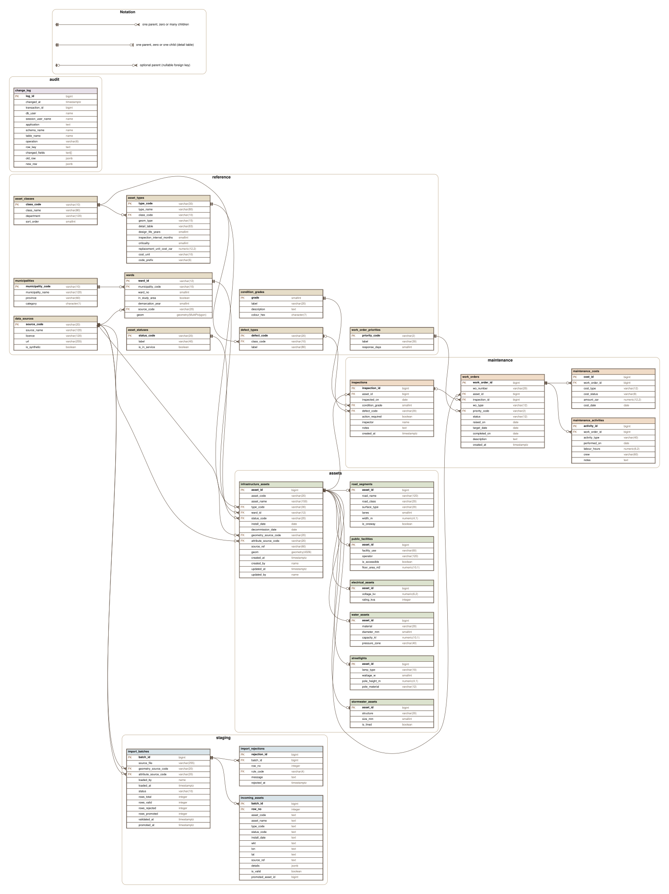

GEO-ASSET ZA: a municipal asset database for Hatfield
A PostgreSQL and PostGIS database for the roads, streetlights, water mains, stormwater, electricity network and community facilities of Hatfield, Hillcrest and Brooklyn in Tshwane. The work is in the database: its design, security, validation, audit trail, backups, performance and monitoring. The map and dashboard below are built on its read-only public views.
Real places, synthetic records. Roads, facilities and other locations come from OpenStreetMap and the Municipal Demarcation Board. Most streetlights, all water mains and all hydrants were generated along the real roads, and every condition grade, inspection, work order and cost is synthetic. Nothing here describes the actual state of City of Tshwane infrastructure.
At a glance
- 11,879assets in one register: points, lines and areas, each checked against its asset type by trigger.
- 115,958inspections and work orders from 2019 to October 2026, all passing the same validation rules as live data.
- 56 testsprove the integrity rules, every role's permissions, the import pipeline and the API, on every push.
- 3.5 sto restore the latest backup into a new database and pass all seven recovery checks.
Explore the register
Every feature is a row in the asset table. Switch asset classes on and off, colour by condition or by class, and click an asset for its record and history.
Dashboard
The figures an infrastructure manager would ask for, each read from a view in the api schema. Snapshot of 2026-10-30.
Condition by asset type
Share of each asset type in each condition grade at its latest inspection. Hover a segment for the count.
Show as a table
Maintenance spend per year
Actual costs on completed work orders. The early years clear a backlog of assets already in poor condition in 2019. *2026 is January to October.
Show as a table
Work orders finished on time
Share of completed work orders finished by their target date (1 day for emergencies, 7 for high, 30 for medium, 90 for low priority).
Highest-risk assets
Risk score = condition grade × criticality of the asset type, plus 2 when the asset is past its design life and 1 when an inspection is overdue. From the materialized view operations.maintenance_priority_summary.
How the database is built
Generated from the live catalog, so the diagram cannot drift from the schema.

referenceWards, asset classes and types with design life, inspection interval, criticality and unit cost; condition grades, priorities, defects.assetsOne register table for every asset, plus six detail tables (streetlights, roads, water, electrical, stormwater, facilities).maintenanceInspections, work orders, activities and planned and actual costs.stagingIncoming batches as raw text, 13 validation rules and a rejection log.auditEvery insert, update and delete, with the fields that changed, written by trigger.operations,api,adminReporting views, the public read-only views, and migrations, backups and monitoring.
Design decisions
- One register, many asset types. Shared columns live in one table; type-specific attributes in 1:1 detail tables. Inspections and work orders reference one parent, whatever the asset.
- One geometry column, checked by trigger. A road must be a line and a streetlight a point; the trigger compares the geometry with the asset type, assigns the ward from the location and generates the asset code.
- Derived values are never stored. Length, area, age, latest condition and replacement value are calculated in views, so they cannot disagree with the geometry and the history.
- The database enforces the rules. Constraints and triggers reject an asset outside the study area, an inspection before installation, a poor grade without a defect, a negative cost or a completed work order without a date, whatever program sends it.
- Assets with a history are never deleted. They are decommissioned; foreign keys refuse the delete.
Administration evidence
Results from the scripts in the repository, taken from the database's own logs when this snapshot was exported.
Backup and recovery restore test
Nightly pg_dump with a logged SHA-256 checksum. Weekly, and on every push, the newest backup is restored into a new database and checked.
Security 8 roles
Least privilege, tested by logging in as each role and trying what it should not be able to do.
- Public web app reads the
apiviews only, in read-only sessions with a 5 s timeout. - Field inspector records inspections in their own name only (row-level security) and may change an asset's status column, nothing else.
- Infrastructure manager edits assets and maintenance, cannot delete an asset or touch the audit log.
- Analyst reads reporting views, never base tables. Import process loads staging only.
- Monitor reads health statistics and no asset data. No object is granted to
PUBLIC.
Writing the tests found two real gaps: a function left executable by everyone, and session limits that PostgreSQL does not inherit through group roles. Both are fixed and now tested.
Performance GiST, KNN, CLUSTER
Median of 7 warm runs on 2,000,000 synthetic points, measured with EXPLAIN (ANALYZE, BUFFERS).
A spatial index made the selective queries hundreds to thousands of times faster, but made a very large box (two thirds of all rows) slower until the table was clustered on the index. Casting the column to geography hides it from the index.
Monitoring health check
One view, ten metrics with thresholds, read by a monitoring role that cannot see asset data.
Data quality staging pipeline
Every row is loaded as text, checked against 13 rules and promoted one row at a time, so a bad row is logged instead of stopping the batch.
The rejected rows were road and stream pieces whose representative point fell just outside the study area after the ward boundary was simplified: a genuine edge case, caught.
Versioned schema 15 migrations
Each migration is applied once and recorded with a checksum; an edited migration stops the runner. Holds .
Method
The study area is wards 56, 82 and 92 of the City of Tshwane on the Municipal Demarcation Board's 2026 boundaries (28 km²). OpenStreetMap features were downloaded with the Overpass API on 2026-11-14 and turned into import files: road segments split at 400 m, traffic signal nodes grouped into junctions, culverts placed where watercourses cross roads. Streetlights were added along the roads at 30 to 45 m spacing where OpenStreetMap has none, water mains alongside the roads and hydrants every 180 m along the mains.
Every file went through the staging pipeline as the import role, which has no direct access to the register. A Python generator then simulated seven years of maintenance per asset: deterioration with age, random failures at type-specific rates, routine inspections at each type's interval, work orders with realistic delays and a backlog, preventive stormwater clean-outs and close-out inspections after repairs. The generated records were loaded with the validation triggers switched on.
Everything runs from one command with Docker Compose: PostgreSQL 16 with PostGIS 3.4, a bootstrap that builds the database from nothing, a read-only FastAPI service, and a scheduler for backups, restore tests, reporting refreshes and health checks. GitHub Actions rebuilds the database, runs the tests and proves a backup can be restored on every push. This page reads a static export of the same api views.
Limits
- The attributes and maintenance history are simulated; they show what the database can do, not the state of the network.
- Facilities are treated as municipal for the demonstration; their real operators were not checked.
- Backups are logical dumps, so recovery is to the last nightly backup. Point-in-time recovery would need WAL archiving, described in the recovery runbook.
Code and documentation on GitHubRecovery runbookPerformance report
Data
- Ward boundaries: Municipal Demarcation Board, wards 2026.
- Roads, traffic signals, streetlights, facilities, watercourses, reservoirs and the electricity network: © OpenStreetMap contributors (ODbL), snapshot of 2026-11-14.
- Basemap: © OpenStreetMap contributors and CARTO.
- Synthetic streetlights, water mains, hydrants, attributes, inspections, work orders and costs: generated for this project with a fixed random seed.